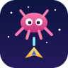

An army of space critters has overrun your world. You get one tiny ship, wave after wave of them and a growing stack of weapons. Shoot the critters, grab the resource containers, and see how far up the scoreboard you can climb.
Sharp is the game's own 800x600. Fast draws fewer pixels, if the picture stutters.
| Touch | Controller | |
|---|---|---|
| Move the ship | Drag anywhere | D-pad or left stick |
| Main weapon | Fires while your finger is down | A (hold) |
| Second weapon | Alt (hold) | B (hold) |
| Third weapon | Special (hold) | X (hold) |
| Pause | Pause | Select |
| Menu | Menu | Start |
| In the menus | Tap an item | D-pad, A to choose, B to go back |
The second and third weapons join in on the harder skill levels. Change the skill under Config in the game's menu.
Critical Mass (Critter) by Frank Becker (GNU GPL version 2 or later), compiled to WebAssembly with small changes for this site: /critter/engine/critter-web.patch, built by tools/build-critter.mjs in github.com/RobertPKyle/frunk-store. The source is at /critter/engine/. Music: "Overdrive" by Centurion_of_war (CC0). See /critter/NOTICE.
frunk.store is not affiliated with or endorsed by the game's author. Play only while parked.